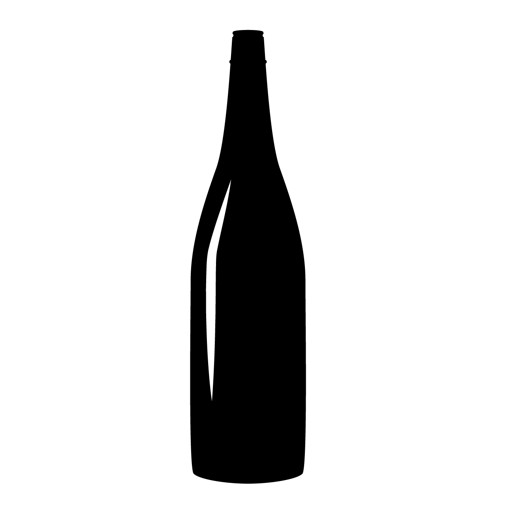

春山酒造
株式会社
季節の移ろいと共に、
心を満たす日本酒をお届けします。
こだわり
水water
春山酒造は、自然豊かな地域に位置し、
その清らかな伏流水を使用。
水の純度が高く、日本酒の味わいに深みを与えます。
米rice
契約農家から選りすぐった酒米のみを使用。
種類によって異なる特性を活かし、それぞれの酒に最適な味わいを追求しています。

技術traditional
伝統的な醸造法を大切にしつつ、
革新的なアイデアを取り入れることで、常に新しい味の探求を行っています。
商品紹介
春乃舞風
Haruno Maikaze

春の訪れを告げるかのような、フルーティで華やかな香り。
厳選された酒米を使用し、熟練の技で丁寧に醸されることで、柔らかな口当たりと清涼感あふれる味わいを実現しました。
おすすめの飲み方: 冷やして、春の食材と共に。
企業情報
| 創業 | 1895年 |
|---|---|
| 所在地 | 新潟県の自然に恵まれた地域 |
| 代表者 | 春山次郎 (代表取締役社長) |
| 理念 |
「四季折々の自然と共に生きる。それが私たちの酒を造る姿勢です。」 春山酒造は、自然の恵みを大切にし、次世代にも引き継がれる日本酒文化を目指しています。 |